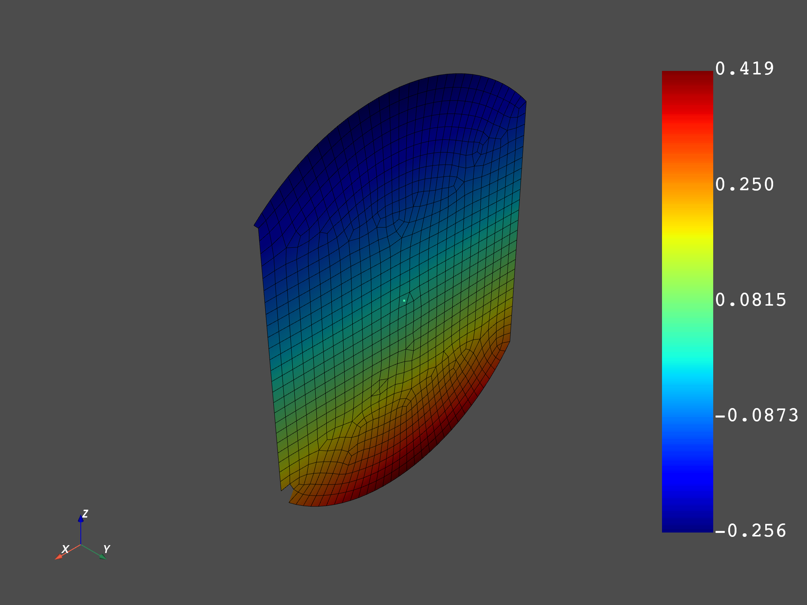
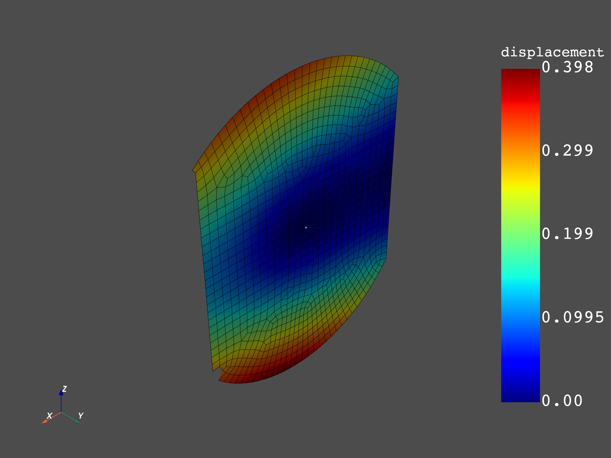

Note
Click here to download the full example code
Distributed msup distributed modal response¶
This example shows how distributed files can be read and expanded on distributed processes. The modal basis (2 distributed files) is read on 2 remote servers and the modal response (2 distributed files) reading and the expansion is done on a third server.
Import dpf module and its examples files
import os.path
from ansys.dpf import core as dpf
from ansys.dpf.core import examples
from ansys.dpf.core import operators as ops
Create the template workflow¶
this workflow will provide the modal basis and the mesh for each domain
template_workflow = dpf.Workflow()
displacement = ops.result.displacement()
mesh = ops.mesh.mesh_provider()
Add the operators to the template workflow and name its inputs and outputs Once workflow’s inputs and outputs are named, they can be connected later on
template_workflow.add_operators([displacement])
template_workflow.set_input_name("data_sources", displacement.inputs.data_sources)
template_workflow.set_input_name("data_sources", mesh.inputs.data_sources)
template_workflow.set_output_name("out", displacement.outputs.fields_container)
template_workflow.set_output_name("outmesh", mesh.outputs.mesh)
Configure the servers¶
Make a list of ip addresses an port numbers on which dpf servers are started. Workflows instances will be created on each of those servers to address each a different result file. In this example, we will post process an analysis distributed in 2 files, we will consequently require 2 remote processes To make this example easier, we will start local servers here, but we could get connected to any existing servers on the network.
remote_servers = [dpf.start_local_server(as_global=False), dpf.start_local_server(as_global=False)]
ips = [remote_server.ip for remote_server in remote_servers]
ports = [remote_server.port for remote_server in remote_servers]
Print the ips and ports
print("ips:", ips)
print("ports:", ports)
Out:
ips: ['127.0.0.1', '127.0.0.1']
ports: [50070, 50071]
Choose the file path
base_path = examples.distributed_msup_folder
files = [os.path.join(base_path, "file0.mode"), os.path.join(base_path, "file1.mode")]
files_aux = [os.path.join(base_path, "file0.rst"), os.path.join(base_path, "file1.rst")]
Send workflows on servers¶
Here we create new instances on the server by copies of the template workflow We also connect the data sources to those workflows
remote_workflows = []
for i, server in enumerate(remote_servers):
remote_workflows.append(template_workflow.create_on_other_server(server))
ds = dpf.DataSources(files[i])
ds.add_file_path(files_aux[i])
remote_workflows[i].connect("data_sources", ds)
Create a local workflow for expansion¶
In this workflow we merge the modal basis, the meshes, read the modal response and expand the modal response with the modal basis
local_workflow = dpf.Workflow()
merge = ops.utility.merge_fields_containers()
merge_mesh = ops.utility.merge_meshes()
ds = dpf.DataSources(os.path.join(base_path, "file_load_1.rfrq"))
response = ops.result.displacement(data_sources=ds)
response.inputs.mesh(merge_mesh.outputs.merges_mesh)
ds = dpf.DataSources(os.path.join(base_path, "file_load_2.rfrq"))
from os import walk
for (dirpath, dirnames, filenames) in walk(base_path):
print(filenames)
response2 = ops.result.displacement(data_sources=ds)
response2fc = response2.outputs.fields_container()
response2fc.time_freq_support.time_frequencies.scoping.set_id(0, 2)
merge_use_pass = ops.utility.merge_fields_containers()
merge_use_pass.inputs.fields_containers1(response)
merge_use_pass.inputs.fields_containers2(response2fc)
expansion = ops.math.modal_superposition(solution_in_modal_space=merge_use_pass, modal_basis=merge)
component = ops.logic.component_selector_fc(expansion, 1)
local_workflow.add_operators([merge, merge_use_pass, expansion, merge_mesh, component])
local_workflow.set_input_name("in0", merge, 0)
local_workflow.set_input_name("in1", merge, 1)
local_workflow.set_input_name("inmesh0", merge_mesh, 0)
local_workflow.set_input_name("inmesh1", merge_mesh, 1)
local_workflow.set_output_name("expanded", component.outputs.fields_container)
local_workflow.set_output_name("mesh", merge_mesh.outputs.merges_mesh)
Out:
['file0.mode', 'file0.rst', 'file1.mode', 'file1.rst', 'file_load_1.rfrq', 'file_load_2.rfrq']
Connect the workflows together and get the output¶
for i, server in enumerate(remote_servers):
local_workflow.connect_with(remote_workflows[i],
{"out": "in" + str(i), "outmesh": "inmesh" + str(i)})
fc = local_workflow.get_output("expanded", dpf.types.fields_container)
merged_mesh = local_workflow.get_output("mesh", dpf.types.meshed_region)
merged_mesh.plot(fc.get_field_by_time_complex_ids(1, 0))
merged_mesh.plot(fc.get_field_by_time_complex_ids(20, 0))
print(fc)
dpf.server.shutdown_all_session_servers()
- 
- 
Out:
DPF Fields Container
with 40 field(s)
defined on labels: complex time
with:
- field 0 {complex: 0, time: 1} with Nodal location, 1 components and 1065 entities.
- field 1 {complex: 1, time: 1} with Nodal location, 1 components and 1065 entities.
- field 2 {complex: 0, time: 2} with Nodal location, 1 components and 1065 entities.
- field 3 {complex: 1, time: 2} with Nodal location, 1 components and 1065 entities.
- field 4 {complex: 0, time: 3} with Nodal location, 1 components and 1065 entities.
- field 5 {complex: 1, time: 3} with Nodal location, 1 components and 1065 entities.
- field 6 {complex: 0, time: 4} with Nodal location, 1 components and 1065 entities.
- field 7 {complex: 1, time: 4} with Nodal location, 1 components and 1065 entities.
- field 8 {complex: 0, time: 5} with Nodal location, 1 components and 1065 entities.
- field 9 {complex: 1, time: 5} with Nodal location, 1 components and 1065 entities.
- field 10 {complex: 0, time: 6} with Nodal location, 1 components and 1065 entities.
- field 11 {complex: 1, time: 6} with Nodal location, 1 components and 1065 entities.
- field 12 {complex: 0, time: 7} with Nodal location, 1 components and 1065 entities.
- field 13 {complex: 1, time: 7} with Nodal location, 1 components and 1065 entities.
- field 14 {complex: 0, time: 8} with Nodal location, 1 components and 1065 entities.
- field 15 {complex: 1, time: 8} with Nodal location, 1 components and 1065 entities.
- field 16 {complex: 0, time: 9} with Nodal location, 1 components and 1065 entities.
- field 17 {complex: 1, time: 9} with Nodal location, 1 components and 1065 entities.
- field 18 {complex: 0, time: 10} with Nodal location, 1 components and 1065 entities.
- field 19 {complex: 1, time: 10} with Nodal location, 1 components and 1065 entities.
- field 20 {complex: 0, time: 11} with Nodal location, 1 components and 1065 entities.
- field 21 {complex: 1, time: 11} with Nodal location, 1 components and 1065 entities.
- field 22 {complex: 0, time: 12} with Nodal location, 1 components and 1065 entities.
- field 23 {complex: 1, time: 12} with Nodal location, 1 components and 1065 entities.
- field 24 {complex: 0, time: 13} with Nodal location, 1 components and 1065 entities.
- field 25 {complex: 1, time: 13} with Nodal location, 1 components and 1065 entities.
- field 26 {complex: 0, time: 14} with Nodal location, 1 components and 1065 entities.
- field 27 {complex: 1, time: 14} with Nodal location, 1 components and 1065 entities.
- field 28 {complex: 0, time: 15} with Nodal location, 1 components and 1065 entities.
- field 29 {complex: 1, time: 15} with Nodal location, 1 components and 1065 entities.
- field 30 {complex: 0, time: 16} with Nodal location, 1 components and 1065 entities.
- field 31 {complex: 1, time: 16} with Nodal location, 1 components and 1065 entities.
- field 32 {complex: 0, time: 17} with Nodal location, 1 components and 1065 entities.
- field 33 {complex: 1, time: 17} with Nodal location, 1 components and 1065 entities.
- field 34 {complex: 0, time: 18} with Nodal location, 1 components and 1065 entities.
- field 35 {complex: 1, time: 18} with Nodal location, 1 components and 1065 entities.
- field 36 {complex: 0, time: 19} with Nodal location, 1 components and 1065 entities.
- field 37 {complex: 1, time: 19} with Nodal location, 1 components and 1065 entities.
- field 38 {complex: 0, time: 20} with Nodal location, 1 components and 1065 entities.
- field 39 {complex: 1, time: 20} with Nodal location, 1 components and 1065 entities.
Total running time of the script: ( 0 minutes 5.918 seconds)